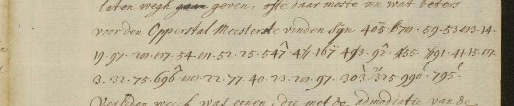

At a glanceRead with known key · partial · two passing letters, three validations
- The letters
- Pieter Battier, Dutch envoy extraordinary in Madrid, to Grand Pensionary Gaspar Fagel, 1686–1688.
- Where
- Nationaal Archief 3.01.18, inv. 401, 109 scans. The key is in 1.10.29, inv. 1209, 86 scans; DECODE R2794 gives an obsolete or erroneous inventory number, 5345.
- The cipher
- A homophonic letter table and an alphabetical Dutch codebook: the same numbers repeat in fifteen blocks distinguished by overhead marks and struck digits.
- How it was deciphered
- The key headed “Voor den Heer Extraord. Envoye Battier” was applied to the transcribed figures. Separate contemporary decipherments validate three letters, including the four numbered passages on 32R for 19 December 1686, strengthening the identification of inv. 1209 as Battier’s key.
- Result
- Two letters pass strict sense without a known contemporary decipherment: 24 April 1687, 230/235 = 97.9% conservatively; 8 April 1688, 313/323 = 96.9%, conservatively 312/323 = 96.6%. The 19 December 1686 reading is validation against 32R: four passages, 186 tokens. The other two focus letters fall below 95%.
- What it says
- Gastanaga may be removed or employed in Peru or Catalonia; the Emperor’s ambassador seeks the Queen’s favour through a nun, the confessor, ministers and friendship with the Countess of Soissons. Madrid delays funding the Netherlands and appointments prompt factional manoeuvres: “brouwen wat met malkander”.
- Still open
- The earlier volume estimate was about 55%; no revised denominator is available for the 235-token addition. Names, mark choices and several constructions remain uncertain; many letters remain unread.
- Credit
- Decipherment by Feyseel Nur (with Claude and Codex). Manuscript images: Nationaal Archief, CC0.

01 The letters and the named key
Battier's correspondence survives in inv. 401 of archive 3.01.18. The key in the Fagel papers, archive 1.10.29, inv. 1209, names him explicitly. DECODE R2794 holds the key but cites “inv. nr. 5345”; that number is absent from the current 1.10.29 inventory. This contribution applies the known key, rather than recovering an unknown system.
The prior-art search covered De Leeuw (2000), DECODE, Tomokiyo, editions and the Nationaal Archief digitised series. No edition was found. De Leeuw's 2000 study discusses Fagel codebooks but does not discuss Battier. The letters are not in DECODE. Contemporary decipherments do exist for 5 December 1686 (28R), 19 December 1686 (32R), 30 January 1687 (42R–43R), and interlinearly on 101R (26 February 1688). The parallel States General set, 1.01.02 inv. 12588.120–125, is not digitised. This is a bounded prior-art finding, not proof that no unpublished reading exists.
02 19 December 1686: third validation letter
Scans 31R and 32L contain 186 cipher tokens. All 186 are key-attested and pass the review's strict sense screen. Scan 32R carries a numbered list 1–4 in a contemporary clerk's hand giving the plaintext of the four cipher passages. The key reading reproduces that list apart from spelling and “niet gedaan” versus “niet afgedaen”. This is a third validation letter, not a new reading, and strengthens the identification of inv. 1209 as Battier's key. The following are the ciphered stretches, with editorial spacing; the surrounding clear text discusses candidates for the Netherlands governorship and the money needed for it.
van de Graaf van Mansfeld, maar sedert het dese laatste eens gemanqueert heeft, is syn persoon weynigh geaestimeert, en syn credit hier aan 't hof seer geringh, en daarom ook voor hem weynigh apparentie.
maar daarom werden de publicqe affairen niet gedaan en blyft alles traineren.
maar soo men die helft vinden kost, soude haastelyk een ander gouverneur de reys na Vlaanderen aannemen.
soo veel impressie, dat men dan soo voorts op geen defensie gedenckt; en wat noch meer is, men mach se ook soecken te desabuseren soo veel men kan, soo syn se soo seer gepersuadeert dat Engelandt en de Staat de Spaansche Nederlanden par raison d'interessen sullen moeten defenderen, dat se weynigh op andere middel gedenken.
The contemporary list confirms 15:325 = wat (32L, token 65) and 12:409 = syn (32L, token 93). The latter retains its legacy C grade for a contextual mark choice, but now has contemporary-plaintext confirmation. On 31R, line L05, tokens 57–59 are 8:721 = niet, 4:294 = gedaan, 4:696 = en; 32L continues “blyft alles traineren”. There is no separate af prefix token in the recorded sequence. The clerk’s “afgedaen” expands the recorded key reading; a token omitted from the transcription cannot be excluded without checking that cipher line against the image.
Mansfeld has little standing at court. Public business drags on. Madrid is so convinced that England and the States must defend the Spanish Netherlands out of self-interest that it gives little thought to other means. Full clear context and token readings are preserved in the repository.
03 24 April 1687: the Queen’s favour
Scans 58R–59L contain 235 cipher tokens (73 and 162). The conservative Codex sense screen is 230/235 = 97.9%. Legacy grades H 212, C 21, M 1, I 1 give H+C 233/235 (99.1%); that total does not establish coherent Dutch sense. No token is 81.
The decipherment-sheet check covered 58L–60R: no interlinear plaintext, numbered list or marginal passage numbers were found. 58L endorses the 10 April letter, 59R is blank, 60L endorses this letter, and 60R begins the next letter. This is the second passing letter without a known contemporary decipherment; the local check does not establish publication novelty.
Gastanaga may be removed before the end of his three years or employed in Peru or Catalonia. His exact condition of departure remains uncertain. The Emperor’s ambassador seeks the advantages enjoyed by his predecessor and
beweeght hemel en aarde om weder in de Koninginne goede gra[tie] te komen
He works through a nun, the confessor and ministers. Renewed friendship with the Countess of Soissons is intended to obtain her good offices; the exact participants in the plural sy remain uncertain. Battier concludes that it appears
Hare Majt. het quaat van den Amb. van den Keyser haar aangedaan noyt niet vergeten sal.
The final sal is encoded at 59L:160–162. The five exclusions are a surplus bare 8 = e (possible encipherment slip), 5:623 gra[tie] (key scan 29R, column 1, partly covered by a pasted slip), and the unresolved meanings of gehelyk, sedert dat and soo als hy. The conservative screen is an editorial assessment, not a confidence probability. The verbatim review qualifies the fluent summaries in the reading files; Mansfeld’s identification is not established by these cipher tokens.
04 8 April 1688: appointments and a sworn party
Scans 107R, 108L, 108R and 109L contain 323 tokens: 322 are key-attested, but only 313/323 = 96.9% pass the strict sense screen; the conservative count is 312/323 = 96.6%. This is one of two focus letters that pass without a known contemporary decipherment. Visual inspection of scans 107–109 found no decipherment list. Inv. 401 has 109 scans; the letter ends on 109 with the signature “Mad. den 8 April 1688”. The reviewed reconstruction below retains repairs and gaps. It is not a diplomatic transcription. Ellipses separate excerpts; brackets mark uncertainty or editorial repair.
Den Grand Maestre aan syn agent geordonneert de oude Koninginne te verseekeren … Oropeza … Melgar sollicitee[r]t noch.
Alleen om Altamira tot vice Roy van [12:6?0 unread] te kunn[e]n maken … De Spaanse mesnagie blyct nu hier uyt klaarlyke … Soo lange als Castanaga gouverneren blyft.
Holsteyn … Oropeza overgegeven … Ondertusschen soo formeert sich een gesworen partye tegen den selven: Connestable van Castille, Os[t]una en Mon[i→t]ere [Monterey?] brouwen wat met malkander.
By Oropeza te willen gaan klagen, waarover Mont[i→e][u→r]ey soo quaat is geworden dat hy met moeyte uyt syn huys heeft kunnen raken. Mont[i→e]rey soude nu ook lichtvaardelyk President d'Italien willen wesen, of gelyk de Flandersche presi[s→d]ence profitabeler is.
Want hy merckt wel, dat als den G[t→r]and Maeist[u→r]e offe een creatuer van Oropesa na Vlaanderen komt, de Nederlandse toestemminge, gelyk in tyt van Grana is geschiedt, door syn handen niet veel sullen passeren.
The agent's instruction, the condition on Gastañaga's tenure, and the formation of a faction are solid within the transcription. The Holsteyn project and Monterey's interest in the Italian or Flemish presidency are plausible. Troop and money figures in the project, and the promise of Imperial letters within fourteen days, are in the clear text.
Osuna remains speculative: the spelling needs deletion of a real t. Holsteyn's identity, the pronouns in the complaint episode, and the exact meaning of toestemminge are unsettled. Translating the latter simply as “Netherlands business” hides the problem. The final clause reads “Grana is geschiedt”, not “Grana's geschiedt”. The review does not independently establish the Grand Master's modern identification.
05 Two focus letters below the threshold
| Letter | Tokens | Key-attested | Strict sense | Generous ceiling |
|---|---|---|---|---|
| 4 December 1687, 91R–92L | 211 | 210 | 199/211 = 94.3% | 96.7% |
| 12 February 1688, 99R and 100R | 271 | 268 | 250/271 = 92.3% | 96.7% |
Both have clustered uncertainties despite high literal key coverage. The December Novelli/Hofmeester construction, gesoubconneert gouverneren, and the proposed interpretation of Sex. remain unresolved. February includes several unkeyed letter repairs. Their full provisional texts and token notes are linked below; neither is presented as a complete reading.
06 Method and validation
The letter table covers 2–98, with eight homophones per vowel and three per consonant, on key scans 3–6. The one-part codebook repeats 99–999 in fifteen blocks: none, ~, backslash, ^, slash, e, l, r, bar, two dots, first/second/third digit struck, c/, reversed c/. Block 13 begins at 100. Spanish councils and grandees occur on scan 59; places on scans 78–82. The transcriptions record block and number separately.
The transcriptions were made by LLMs from the Nationaal Archief scans and checked against the key images. The merged key contains 1,417 distinct dictionary codes: 1,393 earlier codes and 24 additions in the 27 rows of key/dict/nw.tsv. Three codes already occur in the repository (15:165, 2:825 and 11:431); the preserved review identifies only the first two duplicates. Software reapplied these values to the transcribed tokens. Contemporary decipherments for 5 December 1686 (369 tokens) and 30 January 1687 (781) give 1113/1132 = 98.3% agreement where comparable, with 94.7% key-alone agreement. Eighteen positions were not comparable. This validation is not a blind holdout claim. The third validation, 19 December 1686, adds four passages, 186 tokens compared with the numbered decipherment on 32R, with spelling differences and the “gedaan”/“afgedaen” distinction above. The earlier percentages describe the first two letters only; they are not an aggregate score for all three.
The shuffle control, run with scripts/control.py in the target folder, finds 72% of spelled runs segment into Dutch words or names, compared with a mean of 1.2% and maximum of 4.1% across 300 permuted letter tables. That supports the structure of the decoding, not every proper name or interpretation. The fixed lexicon and names list influence this result; the original OpenTaal word list is required to reproduce it and is not bundled.
07 What remains uncertain
The earlier volume estimate was roughly 55% of the cipher in inv. 401; the 235-token addition has no revised volume-wide denominator. The inventory lists the unread letters individually, including the remaining 26 February material. These letters are not yet transcribed; workable with the same key. The three validation letters and the two April readings do not make the entire volume complete.
- 24 April 1687: surplus 8=e, partly covered 5:623 gra[tie], and the meaning of gehelyk, sedert dat and soo als hy remain open, including Gastanaga’s exact departure condition.
- 81 is i in the key. Of 17 occurrences, 14 are interpreted contextually as e and three retain i. None of the three validation letters contains 81; those decipherments do not confirm an 81=e habit.
- The 365 alphabetical reversals in the dictionary, 96 touching focus tokens, are not proven misreads. Historical spelling, inflection and thematic lists complicate the check.
- getwist is the key reading where Turck(en) was inferred. The inference is not promoted to an attested value.
- 12:6?0 on 108L is unread. Osuna, precise pronoun referents and the administrative sense of toestemminge remain speculative.
- Separate decipherment sheets near 4 December 1687 and 12 February 1688 have not been checked.
- The independent review is software re-decoding, not independent paleography. Digit and mark choices, dictionary variants and shifted annotations still need image checks.
The reading TSV grades are legacy labels: H secure key/sense, C contextual mark choice, M conjecture, I unread. They are preserved verbatim and are not repository-grade counts. Under repository terminology, primary-key support is H, contemporary-plaintext support C, uncertainty M and inference I. The conservative semantic screen, rather than a sum of legacy H+C labels, supplies the headline results.
08 Sources and reproducible files
- Nationaal Archief 3.01.18, inv. 401: target cipher scans 31R, 32L; 58R, 59L; 91R, 92L; 99R, 100R; 107R, 108L, 108R, 109L. Validation decipherments: 28R, 32R, 42R–43R; interlinear check: 101R. Lead image: scan 108, right page; CC0.
- Nationaal Archief 1.10.29, inv. 1209: Battier's named key, 86 scans; DECODE R2794's “5345” citation is corrected here.
- K. M. M. de Leeuw, Cryptology and statecraft in the Dutch Republic (University of Amsterdam, 2000). Citation only; thesis PDF not copied.
- Codex review: verbatim reviews, including 24 April 1687, audit notes, 8 April 1688 reconstruction, conservative metrics and semantic adjustments.
- Readings and validation texts. The January validation filename still says 16 January; the inventory corrects it to 30 January. The 8 April 1688 reviewed reconstruction supersedes the original fluent précis; the 24 April 1687 review qualifies the two new reading summaries.
Transcriptions, key tables, inventory, scripts, limitations and review evidence: targets/battier1686/. The independent review checks software decoding; unresolved digit and mark choices still require image checks.